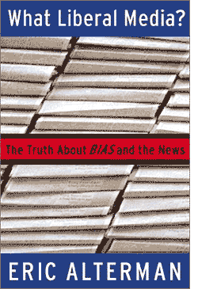

|

What Liberal Media?
The truth about bias and the news. An excerpt from the book.
- - - - - - - - - -
by Eric Alterman
Bias, Slander and BS
 NLY A LIBERAL would be dumb enough to title a book, What Liberal Media? Listen to just about anyone and the answer is obvious: "What, are you stupid? Just pick up a newspaper or turn on your TV." Should that fail to convince, bemusement can turn to anger, or at best, pity, as in "There are none so blind as those who will not see." America's argument about media bias features just two points of view. The right argues that the media is biased toward leftists. The other side responds, to quote David Broder, "dean" of the Washington press corps, "There just isn't enough ideology in the average reporter to fill a thimble." The idea that the media might, for reasons of ownership, economics, class, or outside pressure, actually be more sympathetic to conservative causes than to liberal ones is widely considered to be simply beyond the pale. NLY A LIBERAL would be dumb enough to title a book, What Liberal Media? Listen to just about anyone and the answer is obvious: "What, are you stupid? Just pick up a newspaper or turn on your TV." Should that fail to convince, bemusement can turn to anger, or at best, pity, as in "There are none so blind as those who will not see." America's argument about media bias features just two points of view. The right argues that the media is biased toward leftists. The other side responds, to quote David Broder, "dean" of the Washington press corps, "There just isn't enough ideology in the average reporter to fill a thimble." The idea that the media might, for reasons of ownership, economics, class, or outside pressure, actually be more sympathetic to conservative causes than to liberal ones is widely considered to be simply beyond the pale.
Social scientists talk about "useful myths," stories we all know are not necessarily true, but that we choose to believe anyway because they seem to offer confirmation of what we already know (which raises the question, if we already know it, why the story?). Think of the wholly fictitious but illustrative story about little George Washington and his inability to lie about that cherry tree. For conservatives, and even more many journalists, the "liberal media" is just that: a myth, to be certain, but a useful one. If only it were true, we might have a more humane, open-minded, and ultimately effective public debate on the issues facing the nation. Alas, if pigs could fly...
Republicans of all stripes have done quite well for themselves during the last five decades fulminating about the liberal cabal/progressive thought-police who spin, supplant, and sometimes suppress the news we all consume. Indeed, it's not only conservatives who find this whipping boy to be an irresistible target. Dwight David Eisenhower received one of the biggest ovations of his life when, at the 1964 Republican convention, he derided the "sensation-seeking columnists and commentators" who sought to undermine the Republican Party's efforts to improve the nation. The most colorful example of this art form, however, is probably a toss-up between two quips penned by William Safire when he was a White House speechwriter for Vice President Spiro Agnew, who denounced both the "nattering nabobs of negativism" and the "effete corps of impudent snobs" seeking to sink the nation's morale. His boss, Richard Nixon (who had been Ike's VP), usually held his tongue in public, but complained obsessively in private to the evangelist Billy Graham of "a terrible liberal Jewish clique" that "totally dominates the media" and "erodes our confidence, our strength." Just about everyone wants to get in on the fun. Even Bill Clinton whined to Rolling Stone that he did not get "one damn bit of credit from the knee-jerk liberal press." The presidency's current occupant, George W. Bush, continues this tradition, complaining that the media "are biased against conservative thought." On a trip to Maine in January 2002, he quite conspicuously carried a copy of the best-selling book, Bias, by Bernard Goldberg, as if to the give the so-called "liberal media" -- hereafter, SCLM -- a presidential thumb in the eye.
But while some conservatives actually believe their own grumbles, the smart ones don't. They know mau-mauing the other side is a just a good way to get their ideas across -- or perhaps to prevent the other side from getting a fair hearing for theirs. On occasion, honest conservatives admit this. Rich Bond, then the chair of the Republican Party, complained during the 1992 election, "I think we know who the media want to win this election -- and I don't think it's George Bush." The very same Rich Bond also noted during the very same election, however, "There is some strategy to it [bashing the 'liberal' media]... If you watch any great coach, what they try to do is 'work the refs.' Maybe the ref will cut you a little slack on the next one." Bond is hardly alone. That the SCLM were biased against the administration of Ronald Reagan is an article of faith among Republicans. Yet James Baker, perhaps the most media-savvy of them, owned up to the fact that any such complaint was decidedly misplaced. "There were days and times and events we might have had some complaints [but] on balance I don't think we had anything to complain about," he explained to one writer. Patrick Buchanan, among the most conservative pundits and presidential candidates in the republic's history, found that he could not identify any allegedly liberal bias against him during his presidential candidacies. "I've gotten balanced coverage, and broad coverage -- all we could have asked. For heaven sakes, we kid about the 'liberal media,' but every Republican on earth does that," the aspiring American ayatollah cheerfully confessed during the 1996 campaign. And even William Kristol, without a doubt the most influential Republican/neoconservative publicist in America, has come clean on this issue. "I admit it," he told a reporter. "The liberal media were never that powerful, and the whole thing was often used as an excuse by conservatives for conservative failures." Nevertheless Kristol apparently feels no compunction about exploiting and reinforcing ignorant prejudices of his own constituency. In a 2001 subscription pitch to conservative potential subscribers of his Rupert Murdoch-funded magazine, the Weekly Standard Kristol complained, "The trouble with politics and political coverage today is that there's too much liberal bias... There's too much tilt toward the left-wing agenda. Too much apology for liberal policy failures. Too much pandering to liberal candidates and causes." (It's a wonder he left out "Too much hypocrisy.")
In recent times, the right has ginned up its "liberal media" propaganda machine. Books by both Ann Coulter, a blond bombshell pundette, and Bernard Goldberg, former CBS News producer, have topped the best-seller lists, stringing together such a series of charges that, well, it's amazing neither one thought to accuse "liberals" of using the blood of conservative children for extra flavor in their soy-milk decaf lattes. While extremely popular with the media they attack, both books are so shoddily written and "researched" that they pretty much refute themselves. Their danger derives less from the authors' respective allegations than the "where there's smoke, there's fire" impression they inspire. In fact, barely any of the major allegations in either book stands up to more than a moment's scrutiny. The entire case is a lie, and, yes, in many instances, a slander. Although I abhor the methods of both authors, I do not feel they can go unanswered. Ideas, particularly bad ones, have consequences. The myth of the "liberal media" empowers conservatives to control debate in the United States to the point where liberals cannot even hope for a fair shake anymore. However immodest my goal, I aim to change that.
 Next page | Fact-Checking The Blonde Banshee: Ann Coulter Is Unmasked Next page | Fact-Checking The Blonde Banshee: Ann Coulter Is Unmasked
1, 2, 3, 4
|